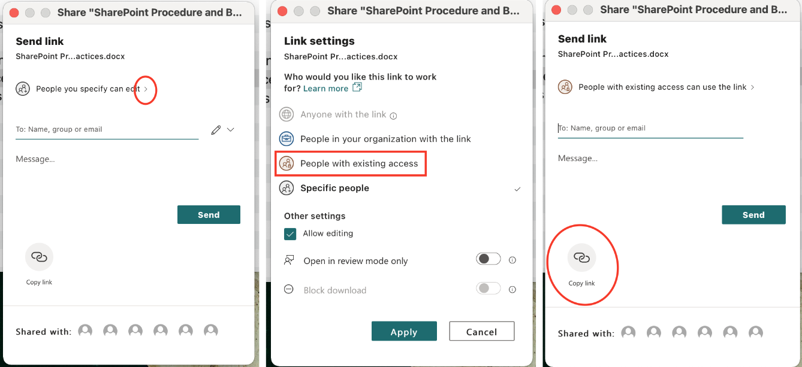

1 Introduction
Placeholder
1.1 How to Use the Site
2 Data Request SOP
Placeholder
2.1 Creating a New Data Request
2.2 Fill out the Data Request Form
2.3 Fill out the Status Instrument
2.4 Completing the Data Request
2.5 Creating the Data Dictionary
2.6 Documenting the Data Request
2.7 Sending Data Out
3 Excel Features SOP
Placeholder
3.1 Find
3.2 Find & Replace
3.3 Sort Data
3.4 Filter Data
3.5 Fill Empty Data
3.6 Delete Empty Rows
3.7 VLOOKUP
3.7.1 Example 1:
3.7.2 Example 2:
4 Ripple SOP
Placeholder
4.1 Ripple General SOP
4.2 Registry
4.3 Studies
4.3.1 Dashboard
4.3.2 Tasks
4.3.3 Recruitment
4.3.4 Calendar
4.3.5 Potential Participants
4.3.6 Enrolled Participants
4.3.7 Study Settings
4.4 Adding Participants
4.5 Participant Contact Card
4.5.1 General
4.5.3 Events
4.5.4 Tasks
4.5.5 Contact Information
4.5.6 Demographics
4.5.7 Custom Variables
4.5.8 Recruitment
4.5.9 Family
4.6 First Pass Consideration
4.7 First Contact Procedure
4.8 Emails/Bulk Emails
4.9 Looking Up a Participant Through URG Outreach
5 REDCap Reports SOP
Placeholder
5.1 Create a Mesulam Center Data Requests REDCap Report
6 SharePoint SOP
SharePoint will be used to create, save, edit, and collaborate on files.
6.2 Collaborating within Word and Excel Documents
- When adding comments, notes or questions in Word or Excel, type “@” and start typing the name of the person responsible for addressing the comment. A list of options will appear, click a name to send an alert of the comment. The person will receive an email with the question or comment included and can reply directly in the email or can go to the document to address the issue.

6.5 Share Files
- SharePoint Files can be shared 1 of 3 ways: User access to the full site, access to a folder, or access to a single file.
- For granting access to one file or folder:
- In the online SharePoint: Click the three vertical dots next to any file or folder, click “Share”.

- In SharePoint on a local drive, right click on the file or folder and click “Share”.
- In both cases, the same dialog box will appear.
- Enter the email address in the “To:” field to share the file or folder.

- An email will be sent to the entered email address with an invitation to the file or folder.
- The link to the file can also be copied and sent separately by clicking “Copy link” at the bottom of the dialog box.
- Enter the email address in the “To:” field to share the file or folder.
- In the online SharePoint: Click the three vertical dots next to any file or folder, click “Share”.
6.6 Copy the Link to a File or Folder
- In the online SharePoint: Click the three vertical dots next to any file or folder, click “Copy link”.
- In SharePoint on a local drive, right click on the file or folder, then click “Share”. The same “send link dialog box will appear.
- Copy the link by selecting “People with existing access” instead of “People you specify…”, then click “Apply”, and finally click “Copy link”.

4.5.2 Comments/Email/Contact/Consent/Forms